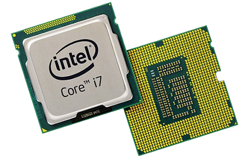

PLACA-MÃE
A placa-mãe é o componente que permite que os dispositivos de um computador se comuniquem entre si. A placa-mãe contém slots e conectores para que processador, módulos de memória RAM, unidades de armazenamento (HD ou SSD) e outros itens sejam interconectados e, assim, façam o computador funcionar.
Para que essa interconexão entre dispositivos funcione, todas as peças devem seguir padrões de formatos ou dimensões. Não é diferente com os tipos de placa-mãe. Nos desktops, esse tipo de componente deve respeitar formatos físicos padronizados (form factors) para que a sua instalação possa ser feita em gabinetes que seguem especificações de tamanho compatíveis.
CPU
CPU é a sigla em inglês para Unidade Central de Processamento, o componente do computador que concentra todas as principais operações que permitem a seu PC, celular, tablet ou videogame a funcionar. Não é exagero, portanto, se referir à CPU como o “cérebro” desses dispositivos.
A estrutura básica de uma CPU é dividida entre três partes principais:
Unidade Lógica e Aritmética (ULA ou ALU): a encarregada de executar as quatro operações básicas (adição, subtração, multiplicação e divisão) e operações lógicas de Álgebra Booleana (IF, AND e OR);
Unidade de Controle (UC): responsável por extrair dados da memória, decodifica-los e executa-los, consultado a ULA quando necessários;
Registradores: unidades de memória da CPU, as mais rápidas e consequentemente, as mais caras de sua categoria, sendo reservadas ao uso apenas em CPU, que dependem de velocidades de acesso altas.
Em suma, a CPU é a responsável por processar todas as principais operações de funcionamento de um computador. Por isso, ela é comumente chamada de processador.

MEMÓRIA RAM
Esse componente é responsável por dar mais agilidade e velocidade no funcionamento geral do sistema. Sem a memória RAM, tarefas como abrir programas e editar arquivos demorariam muito para serem realizadas.
Basicamente, a RAM guarda temporariamente toda a informação que o computador precisa, seja para aquele momento ou para um futuro próximo. Isso é um fator que a diferencia de um HD, por exemplo. Como o disco rígido foi feito para um armazenamento de longo prazo, ele demora mais para disponibilizar os dados que o usuário deseja acessar.
Todavia, os dados armazenados em uma memória RAM são apagados quando você desliga o computador. Basicamente a memória RAM funciona como uma espaço de trabalho, mas temporário. Após lidar com todos os dados e informações, estes voltam a ser armazenados no disco rígido ou SSD.
Num exemplo mais prático, quando você abre um jogo ou uma página em seu navegador, é a RAM que está trabalhando. Pode-se afirmar que essa memória funciona a curto prazo, ou seja, consegue escrever e reescrever rapidamente dados para o uso rápido. Já o HD ou SSD funcionam por armazenamento a longo prazo.
HD
O disco rígido — HD (Hard Disk) ou HDD (Hard Disk Drive) — é o dispositivo de armazenamento de dados mais utilizado nos computadores. Esse tipo de equipamento guarda desde os seus arquivos pessoais até informações utilizadas exclusivamente pelo sistema operacional. O disco rígido é um dispositivo de armazenamento antigo, mas que evoluiu — e muito — com o passar dos anos. Um dos primeiros HDs que surgiram foi o que equipou o IBM 305 RAMAC, computador que entrou em operação em 1956. Com o passar dos anos, os HDs foram ganhando mais capacidade de armazenamento e, paralelamente, se tornaram menores, menos custosos e mais confiáveis.
GPU
GPU (Graphics Processing Unit, ou Unidade de Processamento Gráfico), conhecido também como VPU ou unidade de processamento visual, é um tipo de microprocessador especializado em processar gráficos em computadores pessoais, estações de trabalho ou videogames. GPUs modernas manipulam gráficos computadorizados com eficiência e sua estrutura de processamento paralelo os tornam mais capazes neste tipo de trabalho que CPUs normais. Uma GPU normalmente é utilizada em placas de vídeo (este é chamado de Vídeo Offboard ou Placa de Vídeo Dedicada), mas versões simplificadas são integradas diretamente na placas-mãe o que é chamado de Acelerador Gráfico Integrado ou Placa de Vídeo Onboard.
FONTE DE ALIMENTAÇÃO
A fonte de alimentação é um componente de aparelhos eletrônicos que serve para transformar a energia elétrica que chega pelas tomadas em uma corrente elétrica contínua. Ou seja, ela recebe a energia em 110V ou 220V e transforma na voltagem adequada para o funcionamento do aparelho, que geralmente é 12V.
Algumas fontes podem elevar ou baixar o nível de tensão, e também há aquelas que apenas isolam o circuito da rede de energia elétrica. Ela ainda é um importante protetor contra picos de energia e instabilidade, muito comuns no Brasil. Cada tipo de equipamento exigirá uma fonte específica. Existem dois principais tipos de fontes de alimentação: linear e chaveada. As mais utilizadas são as chaveadas. Nelas, existem capacitores e indutores no processo de conversão de energia e um controle de chaveamento que ajusta a passagem de energia, fixando uma tensão de saída.
MONITOR
O monitor é um dispositivo de saída para o computador que mostra em sua tela os resultados de suas operações. O monitor é conhecido como a tela do computador e é um periférico que se conecta ao computador para poder visualizar as ações e processos executados. Neste sentido, é fundamental para seu uso tanto como o teclado e o mouse.
Através da história os monitores do computador evoluíram. Atualmente, eles dispõem de alta qualidade e podem inclusive conectar-se com a televisão ou com outras telas. Em combinação com boas placas gráficas, são um excelente dispositivo de entretenimento para reproduzir filmes e videogames, além de complementar a experiência do usuário com o computador.
Hoje em dia os monitores LCD se popularizaram amplamente em melhoria à tecnologia CRT. No caso dos primeiros, sua espessura permite ser utilizada em notebooks, possuem melhor geometria e resolução de imagem. Por outro lado, este tipo de tela não gera luz por si só, pela qual exigem uma fonte externa. Além disso, o ângulo de visibilidade plena é menor. As telas CRT dispõem de uma maior variedade cromática e podem reproduzir em diversas resoluções. Entretanto, costumam ser de um tamanho maior e exigir mais espaço, além de ser afetados por outros campos elétricos.
MOUSE
Mouse é uma palavra do inglês, que traduzido para o português significa Rato. Este é um termo muito utilizado para definir um componente de hardware muito importante para o computador, utilizado para posicionar o cursor (uma seta geralmente) na tela do computador. O mouse tem uma história muito peculiar, pois foi tido como uma invenção medíocre e sem futuro, sendo atualmente um componente muito importante para trabalhar, jogar e utilizar as mais variadas funções dos computadores, sendo em alguns casos indispensável.O mouse foi o ponto chave para a criação da interface gráfica, ou seja, ele ajudou a revolucionar a computação. A Xerox (empresa que criou a interface gráfica) não deu a devida importância para a criação e a deixou livre. Um dos chefes da empresa chegou a comentar que ninguém iria comprar algo com Rato (mouse) no nome.A patente do mouse rendeu a seu inventor, Douglas Englebart, 10 mil dólares primeiramente, e alguns prêmios mais tarde. Este componente só passou a ter grande utilidade 15 anos após sua invenção, quando a Apple lançou o Macintosh.
TECLADO
O que é o teclado
O teclado é uma das principais ferramentas que usamos para interagir e introduzir dados no computador. A maioria dos teclados contam com pelo menos 5 grupos de teclas. Vejamos:
Partes do teclado.
Teclado numérico:
Serve para introduzir dados numéricos de forma rápida. As teclas estão agrupadas da mesma forma que aparecem numa calculadora.
Teclas de digitação ou teclado alfanumérico:
Estão incluídos neste grupo as teclas com letras, números, símbolo e pontuação. São teclas que se encontram normalmente em uma máquina de escrever.
Teclas de navegação e teclas especiais:
Estas teclas servem para você navegar por documentos ou páginas web e editar texto. Entre elas estão End, Home, Page up, Page Down, Insert e as teclas de direção.
Teclas de Controle:
São utilizadas sozinhas ou em combinação com números para ativar certas funções ou realizar determinadas ações. As mais conhecidas e mais usadas são: Ctrl, Alt, Esc e a tecla com o logo do Windows.
Teclas de Função:
É a primeira linha de teclas, localizada na parte superior do teclado. Estão representadas por F1, F2, F3 e servem para realizar uma função específica ou para acessar os atalhos dos programas.
Com a tecla ImpPT, localizada na área das teclas especiais, você pode tirar screenshots e assim mostrar ou enviar imagens do que você está vendo no monitor ou na tela do seu computador.